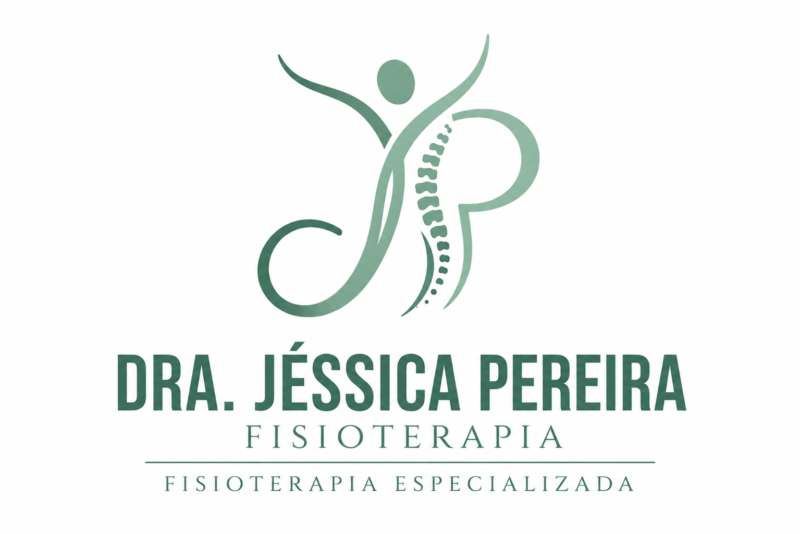

Fisioterapia Domiciliar humanizada para crianças, adultos e idosos em Hortolândia/SP e região.
Agendar pelo WhatsAppO atendimento fisioterapêutico domiciliar é realizado de forma individualizada, respeitando as necessidades, limitações e objetivos de cada paciente. O cuidado no conforto do lar proporciona mais segurança, praticidade e acolhimento para o paciente e sua família.
A Dra. Jéssica Macedo Pereira atua com fisioterapia, psicomotricidade e reabilitação funcional, oferecendo um plano terapêutico personalizado para promover saúde, independência, funcionalidade e qualidade de vida.
Dra. Jéssica Macedo Pereira é Fisioterapeuta, Educadora Física, Psicomotricista, Especialista em ABA (Análise do Comportamento Aplicada) e Pós-graduada em Gerontologia, atuando com atendimento domiciliar humanizado para crianças, adultos e idosos. Sua trajetória acadêmica multidisciplinar permite uma visão ampla e integrada do cuidado à saúde, possibilitando a elaboração de planos terapêuticos individualizados, alinhados às necessidades, objetivos e particularidades de cada paciente. Com foco na promoção da saúde, prevenção de complicações, reabilitação funcional, desenvolvimento motor e melhora da qualidade de vida, Dra. Jéssica oferece um atendimento acolhedor, ético e baseado em evidências científicas. O tratamento é realizado no conforto do lar, proporcionando maior comodidade, segurança e participação da família durante o processo terapêutico. Atendendo crianças, adultos e idosos, seu trabalho busca estimular a autonomia, a independência funcional e o desenvolvimento das capacidades motoras e cognitivas, sempre respeitando o ritmo e as necessidades individuais de cada pessoa. Formação Acadêmica e Especializações • Graduação em Fisioterapia • Graduação em Educação Física • Pós-graduação em Psicomotricidade • Especialização em ABA (Análise do Comportamento Aplicada) • Pós-graduação em Gerontologia Compromisso com o Cuidado Meu propósito é oferecer um atendimento de excelência, pautado na humanização, no respeito e na individualidade de cada paciente, contribuindo para mais saúde, funcionalidade, independência e qualidade de vida.
Meu propósito é oferecer um atendimento de excelência, pautado na humanização, no respeito e na individualidade de cada paciente, contribuindo para mais saúde, funcionalidade, independência e qualidade de vida.
Atendimento voltado ao desenvolvimento motor, coordenação, equilíbrio e funcionalidade da criança.
Prevenção de quedas, melhora da mobilidade, fortalecimento e promoção da autonomia do idoso.
Tratamento para dores, limitações de movimento, fraqueza muscular e recuperação funcional.
Estímulos para coordenação motora, equilíbrio, lateralidade, percepção corporal e planejamento motor.
Acompanhamento para pacientes com alterações neurológicas, visando funcionalidade e independência.
WhatsApp: (19) 99890-0329
Instagram: @drajessicapereirafisio
Atendimento: Hortolândia/SP e região
Quero agendar uma avaliação